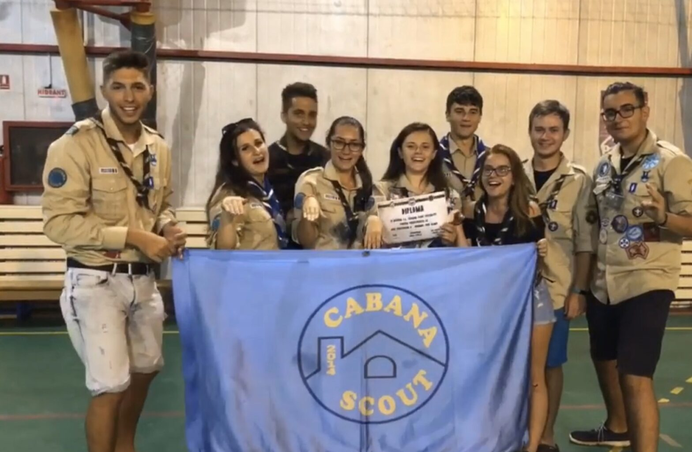

„Atenție, se deschid ușile" – Iași Cercetează 2019

2019 a fost primul an în care am participat la Iași Cercetează. Am așteptat evenimentul încă din luna mai și nu am regretat așteptarea.
După un drum lung, dar cu multe opriri – una dintre ele la o piscină 😁- am ajuns la școala unde urma să ne petrecem următoarele zile, la scurt timp ajungând și cealaltă jumătate a patrulei. Cu toții ne-am căutat prietenii pe acolo ca să-i anunțăm că am ajuns și să îi luăm în brațe.
Următoarea zi am văzut mare parte din oraș în timp ce căutam checkpoint-urile, am vizitat câteva obiective turistice și am mâncat împreună cu prietenii noștri din alte orașe. De asemenea, am făcut și multe poze, în special la Palatul Culturii.
A treia zi a fost una destul de încărcată. S-au desfășurat diferite ateliere: de glume, de jocuri, dansuri, construcții din bețișoare și multe altele. O noutate pentru mine și majoritatea din patrulă a fost Scout Ball-ul – Miruna fiind câștigătoarea noastră de care suntem foarte mândri. Seara am ieșit împreună cu alte centre pentru a ne bucura de ultimele ore petrecute împreună și ne-am simțit foarte bine cântând și dansând. Îmi voi aduce mereu aminte de vibe-urile bune din acea seară, care mi-au făcut următoarea săptămână mai bună, amintindu-mi de momentele frumoase de atunci.
Dimineața următoare am plecat destul de devreme, deoarece urma un drum destul de lung. Deși eram puțin triști că ne despărțim de prietenii noștri din toate colțurile țării, ne bucurăm că am trăit momente frumoase împreuna în ultimele trei zile.
Claudia (Clau) Chiriac, eXplorator